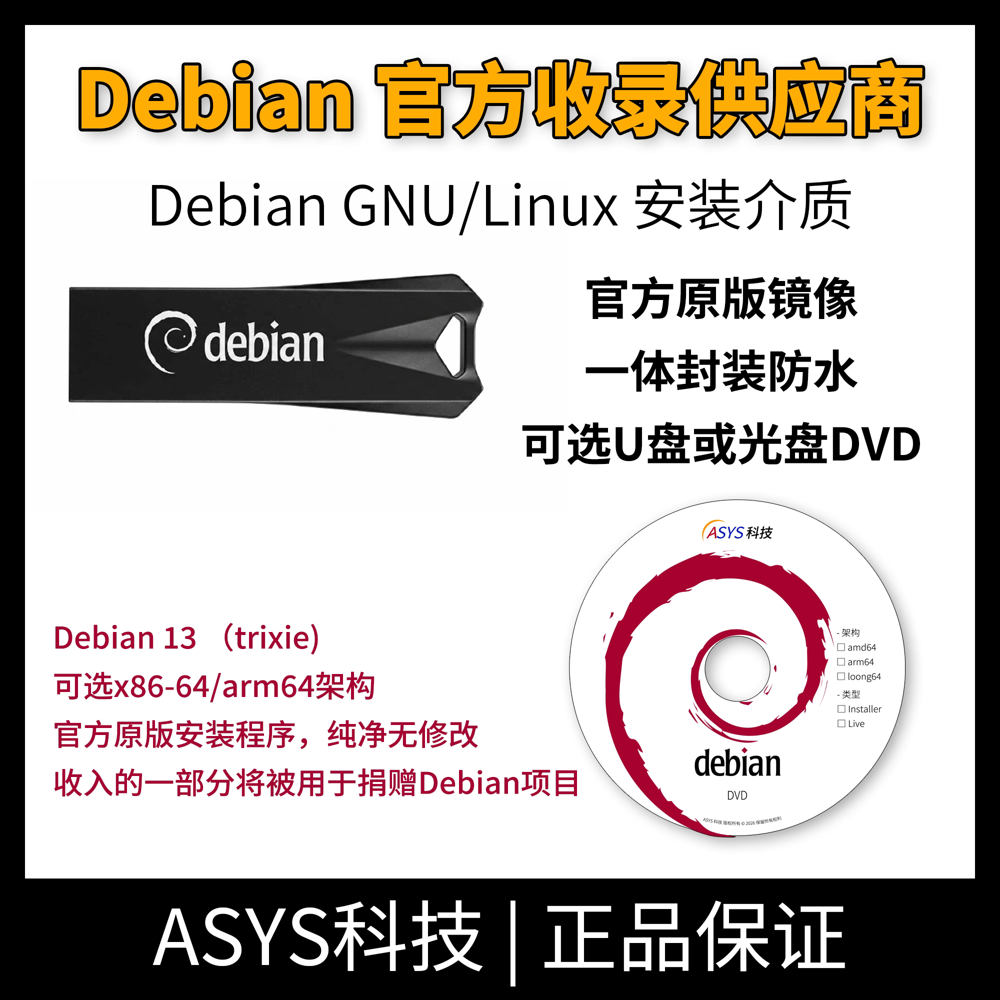
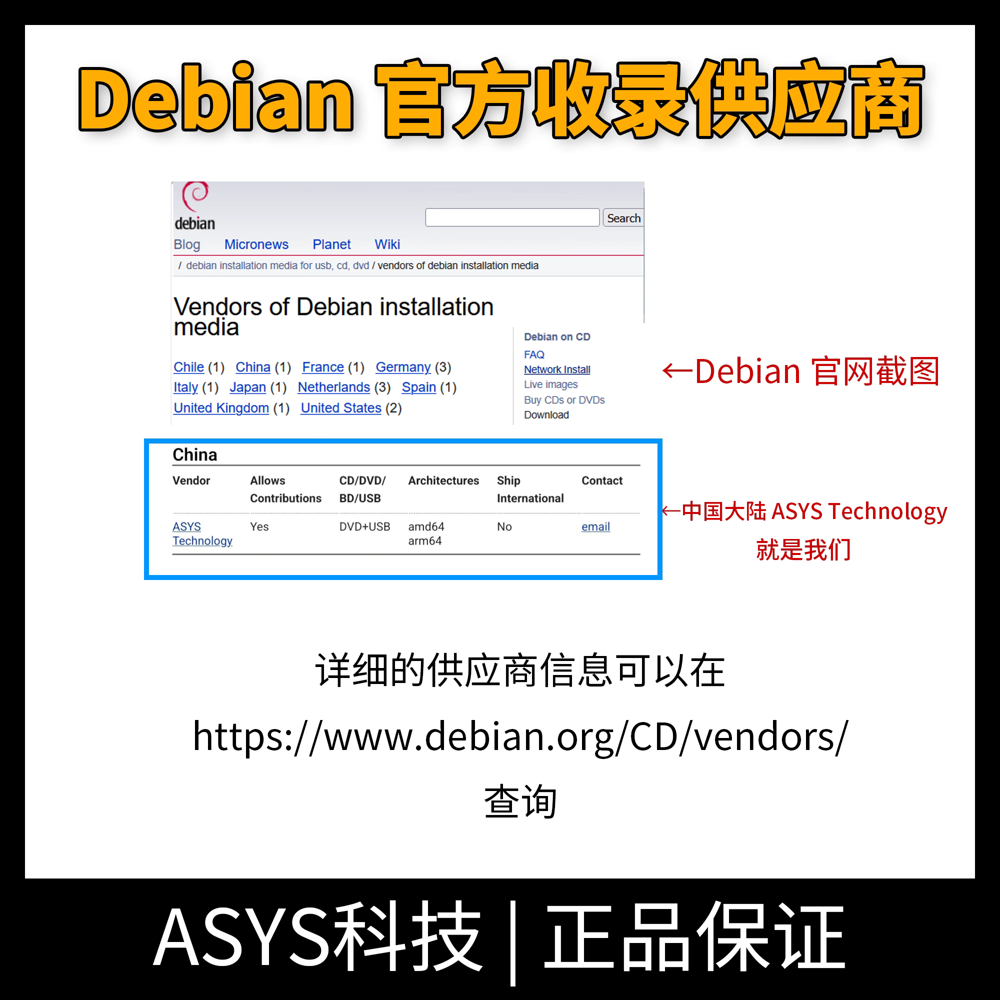
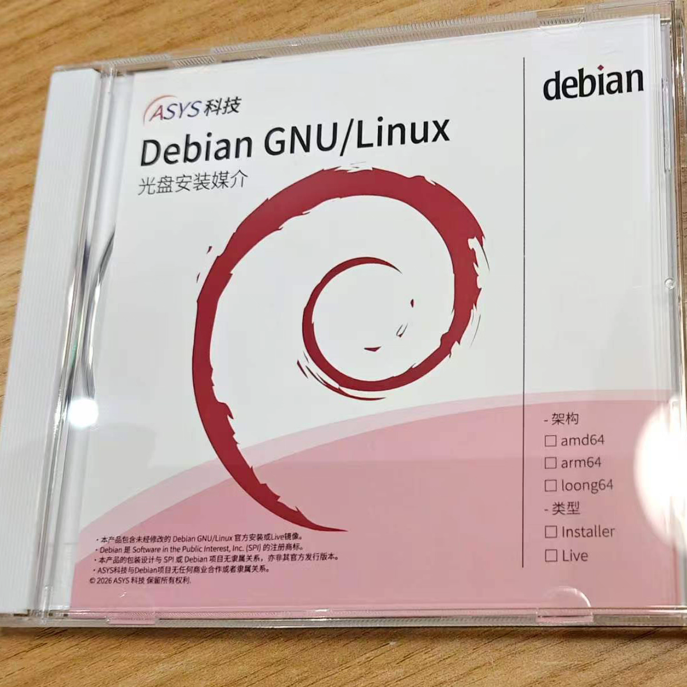
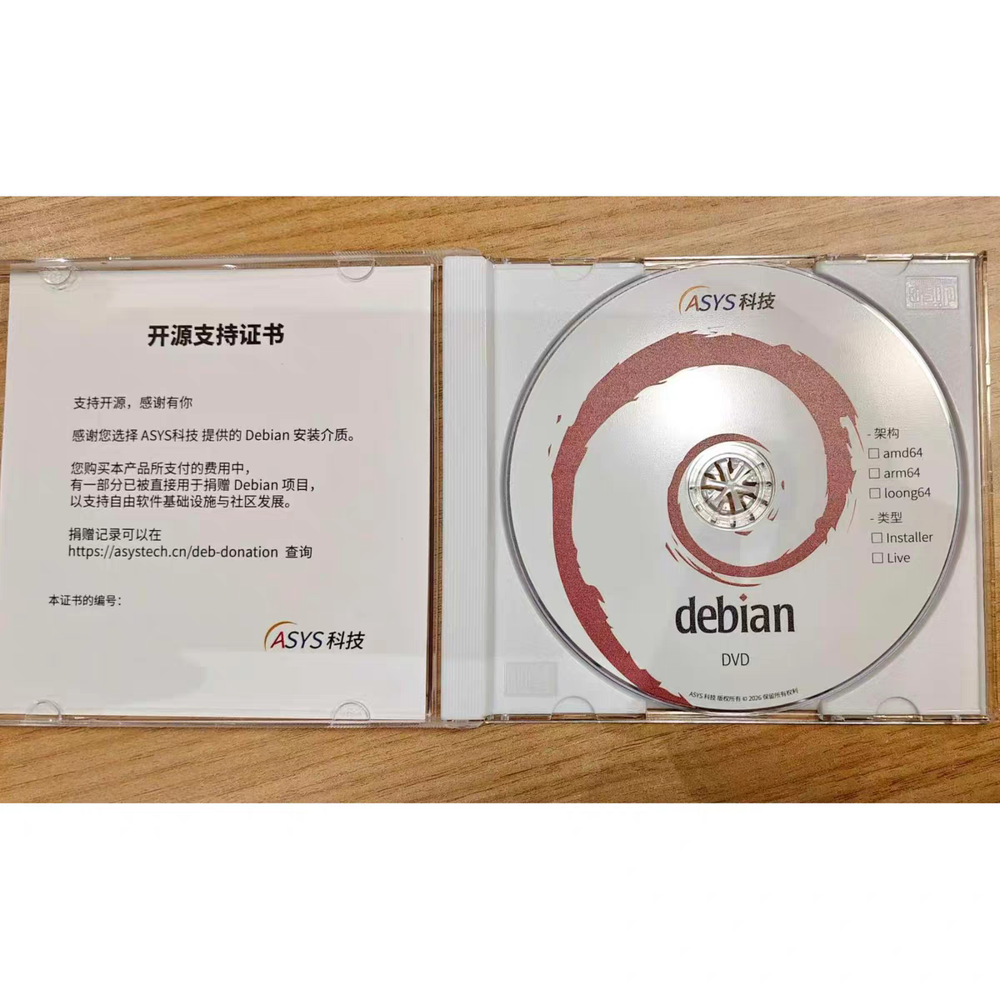
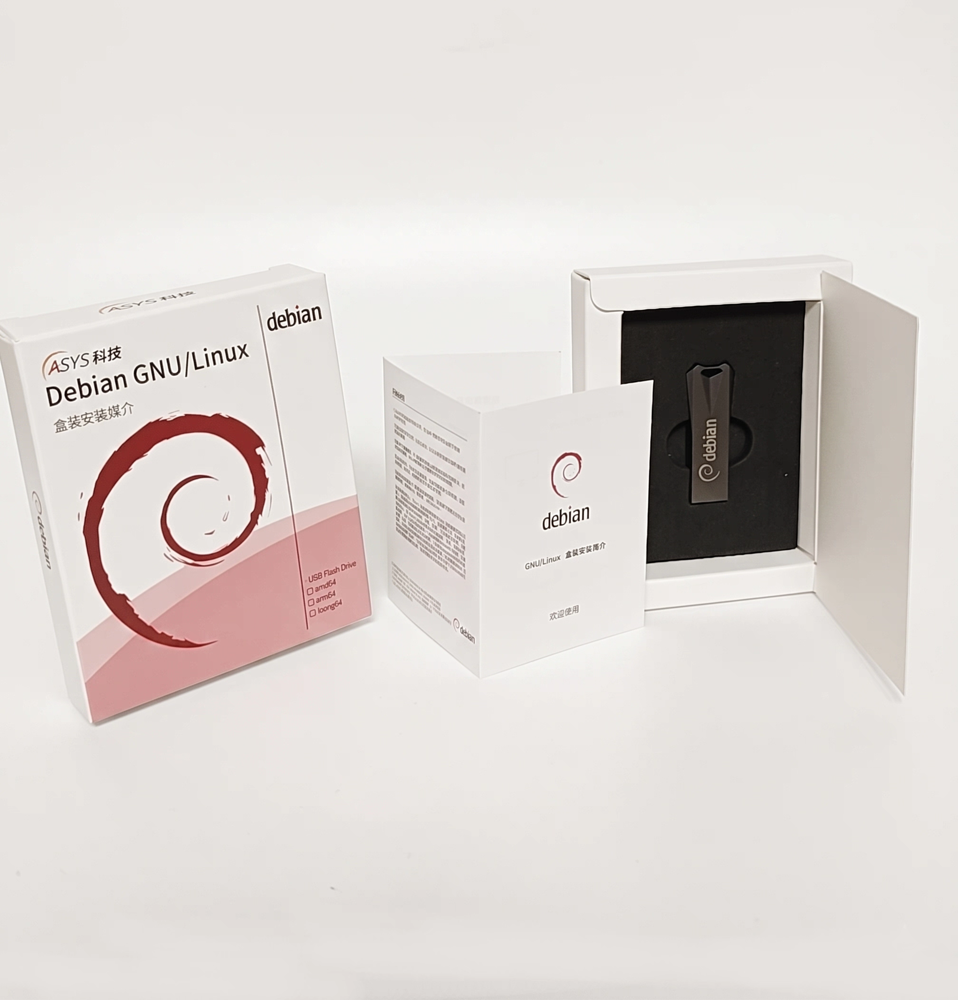

| 产品型号 | Debian13 Linux 官方原版介质 |
| 套装内容 | Debian 13 网络安装+LiveCD U盘 |
| 系统版本 | Debian 13 GNU/Linux |
| 适用架构 | amd64 (x86_64) |
| 启动模式 | UEFI (Secure Boot Ready) / BIOS Legacy |
赛思科技（ASYS Technology）是目前中国大陆唯一被 Debian 官方网站正式收录的实体安装介质（CD/DVD/USB）供应商。（如上方主图第五张所示）。我们致力于为国内用户提供最纯净、最可靠的开源生态支持。
本产品专为系统管理员、开发者及高安全要求环境打造。为您提供即插即用的 Debian 官方离线安装方案。拒绝任何第三方修改，以物理介质的绝对可靠性，完美解决传统网络安装中由于服务器连接不稳定、下载中断而导致的致命痛点。
严守官方发行标准。我们的介质在刻录前均经过严格的 SHA512 哈希值校验，坚决杜绝第三方非官方源中可能包含的“夹带私货”，确保您得到的是原汁原味的 Debian 系统。
专为极高安全要求的环境（Air-gapped）设计。配套的介质包含了完整的离线安装包集合，对于不允许连接外部互联网的涉密服务器，这是合规且安全的唯一安装途径。
不仅可作为纯命令行服务器的坚实基石，安装向导还内置了 GNOME、KDE、XFCE 等多种主流桌面环境，您可以在安装时自由勾选，满足各种生产力需求。
告别因为国外服务器连接不稳定、下载镜像源中途断开导致的安装失败。本地实体介质高速直读，几分钟内即可完成基础系统部署，效率成倍提升。
U盘套装不仅用于安装，还包含完整的 Live 桌面环境。当您的主系统崩溃、GRUB 引导损坏或忘记密码时，插上它免安装即可进入图形界面，成为您手中强大的“应急瑞士军刀”。
不论是十年前的老旧电脑，还是支持 Secure Boot 的现代主板，我们的介质完美支持 UEFI 与 Legacy 双模式引导，彻底解决您的兼容性焦虑。
稳定、自由、强大的 Debian 系统触手可及。拥有一份可靠的实体安装介质，将成为您系统运维和开发路上最安心的后盾。
免责声明：Debian 是自由软件，按“原样”（AS IS）提供。社区志愿者致力于提供高质量的服务，但依据自由软件许可证（如 GPL），软件不提供任何明示或暗示的担保，包括但不限于对适销性或特定用途适用性的担保。ASYS科技仅分发Debian，与Debian项目无任何商业合作或隶属关系。